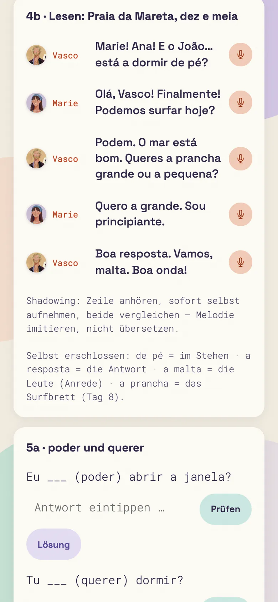
01
Lektion des Tages mit Dialog und Übungen
Zwölf neue Wörter mit Lautschrift und Audio, ein Dialog mit den vier Stimmen, Grammatik als Dica do Vasco. Dann tippst du selbst, und die App prüft sofort.
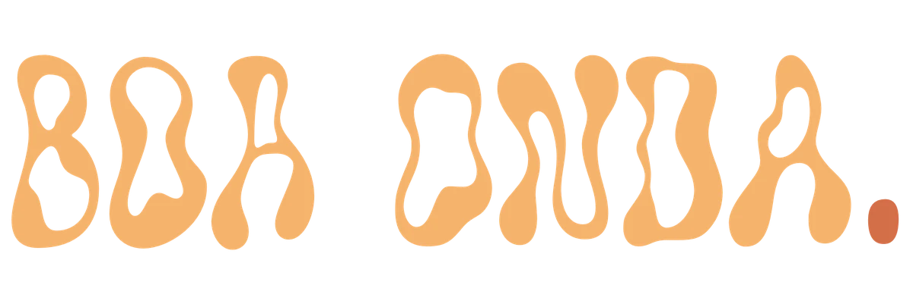
Europäisches Portugiesisch
Eine Reise mit Marie von Porto nach Sagres: 28 Tage, jeden Tag ein Dialog, gesprochen von echten Stimmen aus Portugal.
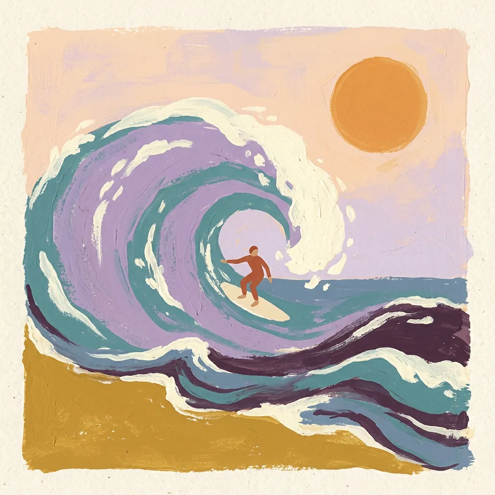
Woche 1 + 2 kostenlosSo lernst du
Eine Lektion dauert etwa 25 Minuten. Alles baut aufeinander auf: Was Marie diese Woche braucht, lernst du diese Woche.

01
Zwölf neue Wörter mit Lautschrift und Audio, ein Dialog mit den vier Stimmen, Grammatik als Dica do Vasco. Dann tippst du selbst, und die App prüft sofort.
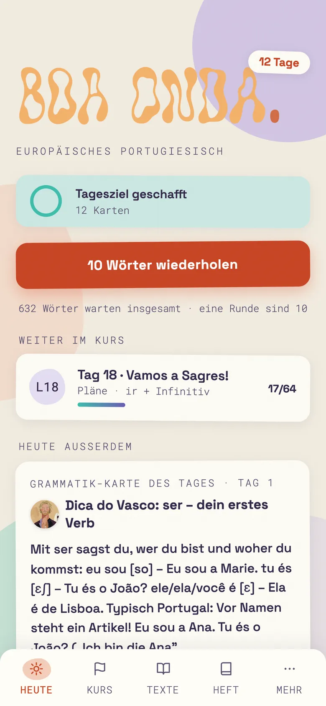
02
Vokabeln und Übungen kommen in wachsenden Abständen wieder. Was gewackelt hat, taucht früher auf, was sitzt, seltener. Jeden Tag ein kurzer Stapel, keine Punktejagd.
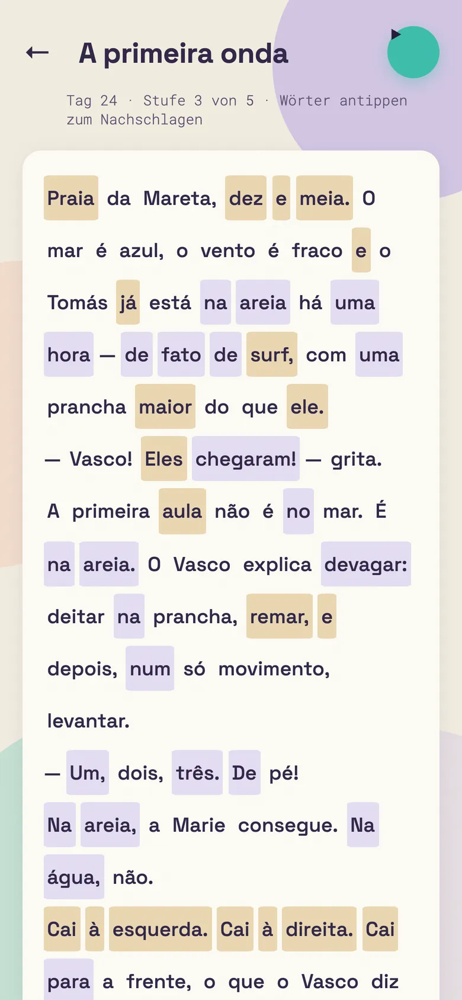
03
Zu jeder Lektion ein Lesetext, jeden Tag ein Stück schwerer. Jedes Wort antippen, anhören, nachschlagen. Das Wörterbuch ist gleich daneben.
Die Reise
Vier Wochen, vier Orte. Jede Woche ist ein Kapitel mit eigenem Cliffhanger vor dem Wochentest.
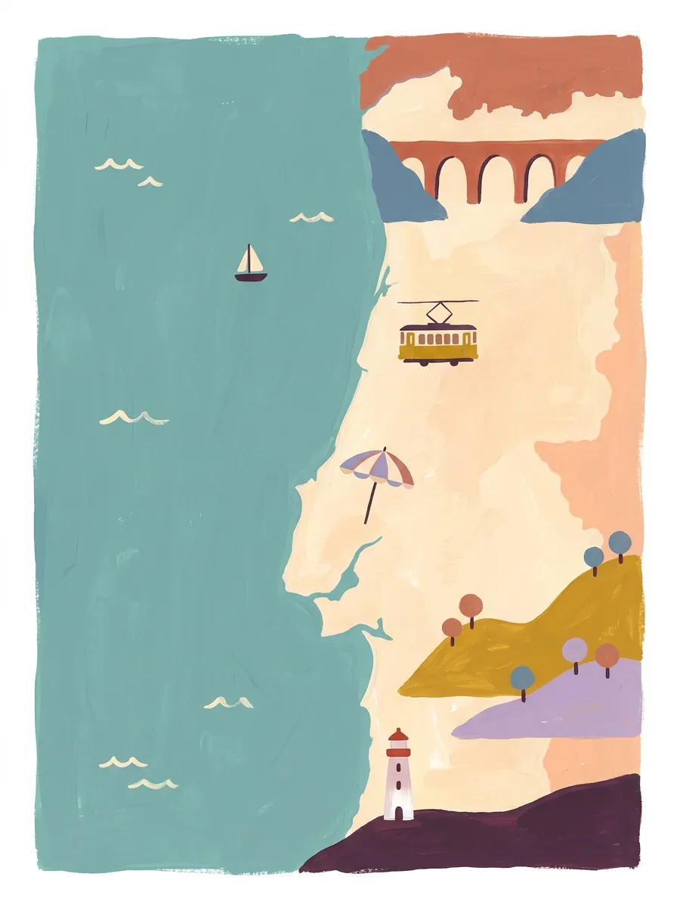
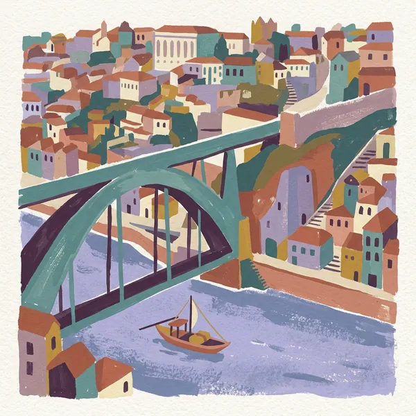
Begrüßen, Herkunft, Alter, erste Fragen. Marie lernt Ana kennen, dann João, der ständig müde ist. Warum eigentlich?
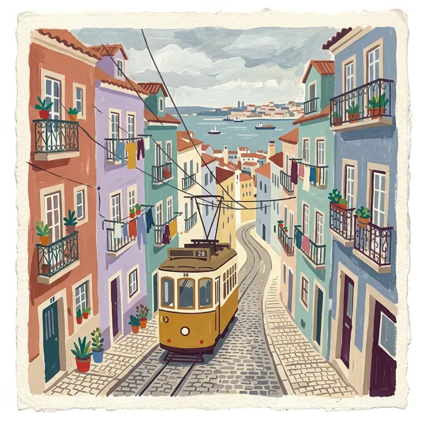
Familie, Café, Preise. Die erste eigene Bestellung, und Anas Großmutter redet viel zu schnell.
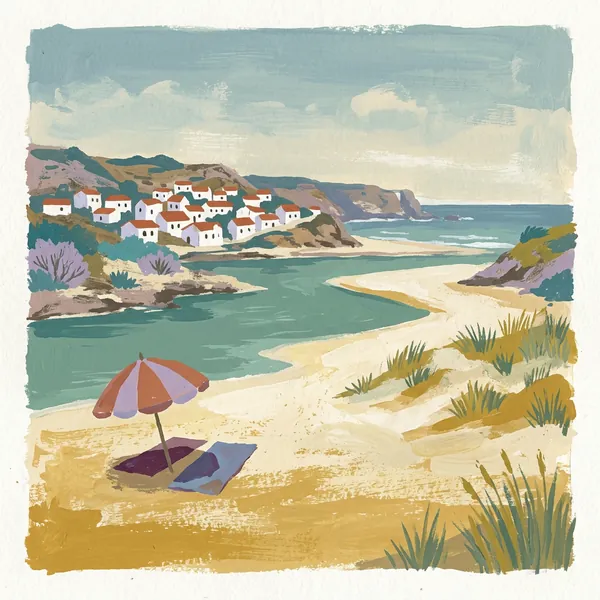
Tagesablauf, Uhrzeiten, Wohnung, Wetter. Und Pläne machen mit ir + Infinitiv, denn im Süden werden die Wellen gut.
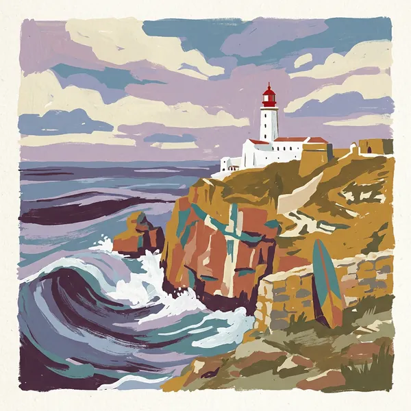
Einkaufen, Weg fragen, Restaurant, das erste Gespräch über gestern. Vasco endlich live an der Praia da Mareta.
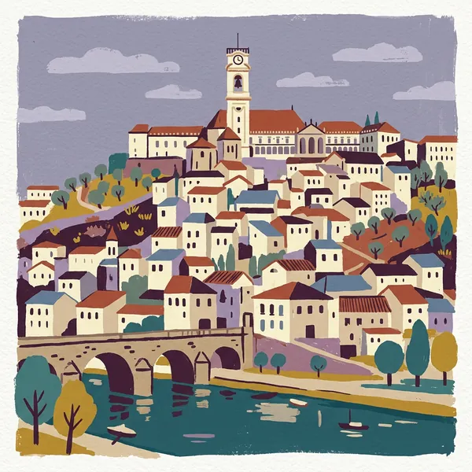
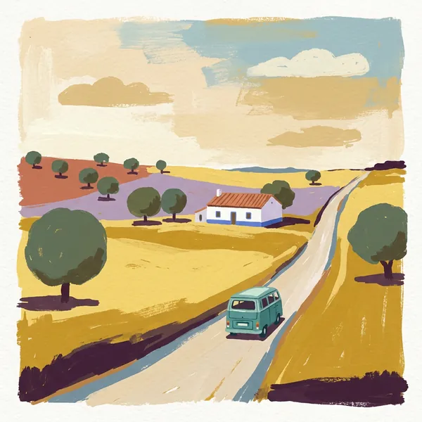
Wer mitreist
Jede Figur hat ihre eigene Stimme und ihre eigene Art zu reden. Nach einer Woche weißt du, wer spricht, bevor du den Namen liest.
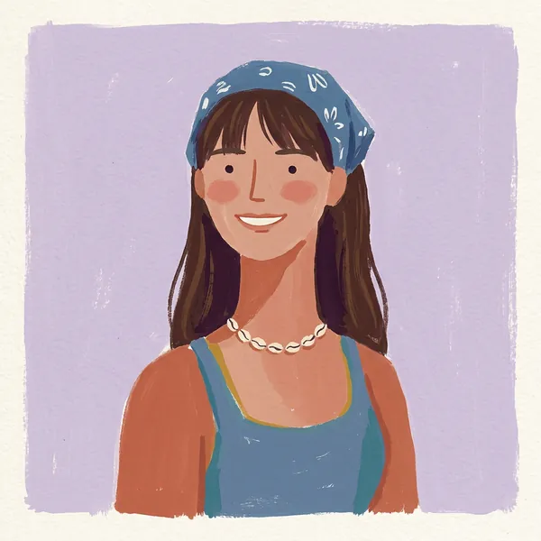
Neu in Lissabon, macht Fehler, fragt nach. Ihre Fragen sind deine Fragen.
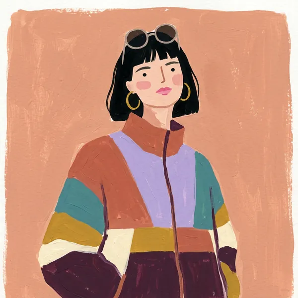
Maries erste Freundin in Portugal. Direkt, witzig und felsenfest überzeugt: No Porto é melhor!
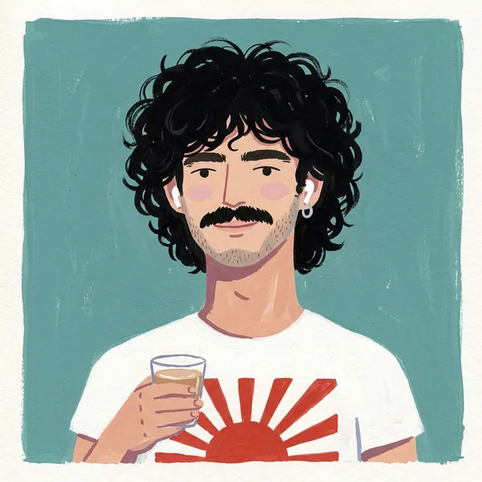
Kennt jede Gasse und jeden Miradouro. Ständig müde (estou cansado…), aber hellwach, wenn es um seine Stadt geht.
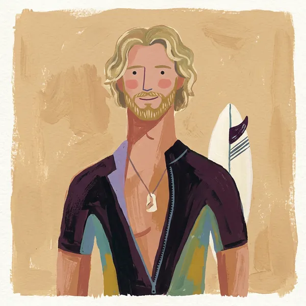
Erklärt Grammatik ruhig und einfach in der Dica do Vasco. Verabschiedet sich immer gleich: Boa onda!
Warum europäisch
Die meisten Kurse und Apps unterrichten brasilianisches Portugiesisch. Wer damit in Portugal ankommt, versteht erst einmal wenig. Boa Onda ist von Tag 1 an auf den Klang von Lissabon eingestellt.
Der Wortschatz kommt aus Portugal: bica, autocarro, pequeno-almoço, telemóvel. Nichts, was dich in der Pastelaria komisch angucken lässt.
In Portugal duzt man mit tu und den passenden Verbformen: tu és, tu falas, tu queres. Du lernst sie von Anfang an, nicht als Fußnote.
Unbetonte Vokale verschwinden fast: telefone klingt wie „tlfón“. Alle Dialoge sind so gesprochen, die Lautschrift folgt der Lissabonner Aussprache.
| Deutsch | Portugal | Brasilien |
|---|---|---|
| der Espresso | a bica | o cafezinho |
| du bist | tu és | você é |
| der Bus | o autocarro | o ônibus |
| das Handy | o telemóvel | o celular |
| ich bin gerade am Reden | estou a falar | estou falando |
| sechzehn | dezasseis | dezesseis |
Preis
Die ersten zwei Wochen sind frei: 14 Lektionen von Porto bis Lissabon. Wer weiterreisen will, nimmt Premium, als Abo oder einmal für immer.
Läuft offline. Deine Daten bleiben auf dem Gerät.
Zum Launch benachrichtigen
Boa Onda läuft schon im Browser. Sobald die App bei Google Play und im App Store steht, bekommst du genau eine E-Mail. Sonst nichts.
Lieber ohne Formular? Dann schreib an boaonda.app@gmail.com.